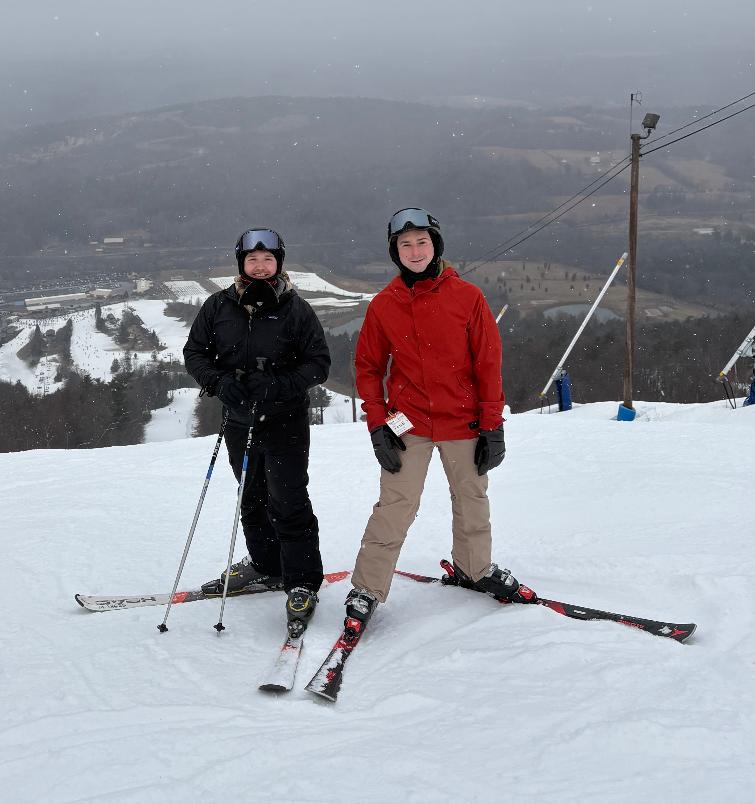

The Thrill of Skiing: A Dance with the Mountains
The Rush
There is nothing quite like the rush of skiing down a mountainside, the crisp mountain air biting at your cheeks as you carve through fresh powder. It is an experience that combines adrenaline, skill, and an intimate connection with nature. Skiing is more than just a sport; it is a symphony of movement, a test of endurance, and a celebration of winter's breathtaking beauty.
For those who have never strapped into a pair of skis, the appeal might seem elusive. However, from the moment you feel the smooth glide over snow and the exhilarating pull of gravity, you understand why so many are drawn to the slopes. Whether you're a beginner mastering the art of the snowplow or an expert carving tight turns on a black diamond run, every skier finds a unique joy in the journey down the mountain.
One of the greatest thrills of skiing is the sheer speed. The wind rushes past as you descend, each turn a calculated move in an intricate dance with the landscape. The sense of freedom is unmatched, as every trail offers a new adventure and every run presents a fresh challenge. The unpredictability of the terrain keeps even seasoned skiers on their toes, ensuring no two descents are ever quite the same.
Beyond the thrill, skiing fosters a profound appreciation for nature. The mountains, blanketed in white, stretch endlessly, their majesty inspiring awe. The silence of a snow covered forest, interrupted only by the rhythmic swoosh of skis against powder, is a reminder of the tranquility found in the heart of winter's embrace.
Skiing is also a social experience, a sport that brings people together. Families bond over shared runs, friends challenge each other on the moguls, and strangers become comrades on the chairlift. Apres ski culture, with its warm drinks and lively conversations, adds to the charm, making a day on the slopes as much about camaraderie as it is about sport.
For those who seek adventure, skiing delivers in every way imaginable. It is a sport of highs and lows of breathtaking peaks and exhilarating descents. Whether you ski for the speed, the scenery, or the sheer joy of movement, one thing is certain: once you experience the thrill of skiing, you will forever be drawn back to the mountains.
The Joy
Beyond the excitement and challenge, skiing brings an unparalleled sense of joy. There is a childlike wonder in the simple act of gliding across the snow, a pure and unfiltered happiness that comes with being in the moment. The joy of skiing is found in the little things the crunch of fresh snow beneath your boots, the golden glow of the sun on the slopes, and the deep breath of cold, crisp air that invigorates the soul.
Each run is an opportunity to lose yourself in the rhythm of movement, to let go of worries and embrace the present. The repetitive motion of carving down the slopes, the weightless feeling of catching air over a small jump, and the triumphant satisfaction of conquering a difficult trail all contribute to an overwhelming sense of fulfillment.
Moreover, skiing allows for personal growth and accomplishment. Whether its learning a new technique, braving a steeper run, or simply improving balance and control, every skier experiences moments of progress that spark joy. The mountains become a playground, a place where fun and challenge coexist, offering a unique escape from the pressures of everyday life.
The joy of skiing lingers long after the last run of the day. It's found in the laughter shared with friends over a warm meal, in the memories of breathtaking views, and in the anticipation of the next adventure on the slopes. Skiing is more than a sport it is a source of pure, unfiltered happiness that keeps enthusiasts returning to the mountains time and time again.
The Speed
Speed is one of the defining characteristics of skiing, offering an unmatched thrill that exhilarates the senses. The moment skis make contact with the slope, momentum takes over, propelling the skier forward in a controlled yet dynamic descent. The rush of wind, the blur of snow covered trees, and the sharp turns down a steep incline create an electrifying experience that is both thrilling and addictive.
For many, the pursuit of speed is what makes skiing an adrenaline fueled sport. Advanced skiers push their limits, seeking out the steepest runs and the most challenging terrains to experience the raw power of velocity. Competitive skiers train to perfect their form, maximizing aerodynamics to slice through the air with minimal resistance.
However, speed is not just about recklessness it requires skill, precision, and control. Learning how to manage speed, adjust turns, and maintain balance at high velocities is what separates seasoned skiers from novices. The ability to harness speed without losing control is a testament to a skier's mastery over the mountain.
Speed amplifies the thrill of skiing, making every descent an adventure and every run a unique challenge. Whether carving down a groomed trail or navigating an untouched backcountry slope, the sensation of accelerating down the mountain is what keeps skiers coming back for more, eager to chase the next exhilarating rush.